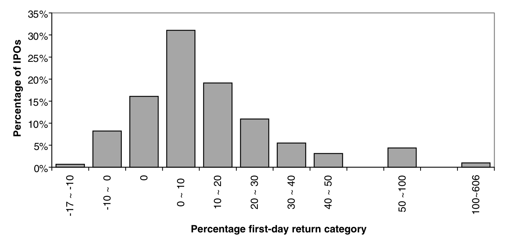
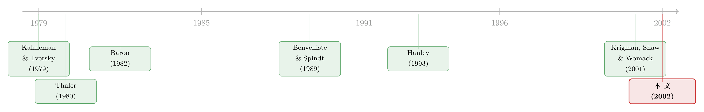

151 万、不，1.51 亿美元留在桌上，他为什么还笑得出来？
本文读的是 Loughran & Ritter (2002, Review of Financial Studies)：1990–1998 年间美国 IPO 的发行人累计把 270 亿美元 留在了桌上（约为他们付给投行佣金的两倍），却几乎从不为此动怒。两位作者用一个 前景理论 (prospect theory) 模型给出答案——发行人在意的不是「损失了多少」，而是「相对预期，我的财富变多了还是变少了」；而留在桌上的钱，恰恰与那份「意外之喜」高度正相关。沿着这条逻辑，他们还顺手解释了「热销市场 (hot issue markets)」，并给 IPO 折价提出了一个新解释。
1 一个让金融经济学家头疼了几十年的场景
先讲一个真实的故事。
1995 年 8 月，Netscape 上市，主承销商是 Morgan Stanley。500 万股以每股 \$28.00 卖给投资者，当天收盘价冲到 \$58.25。也就是说，按收盘价算，这家公司本可以多融到一笔钱——具体是多少呢？(58.25 − 28.00) × 500 万 ≈ 1.51 亿美元。这 1.51 亿 就这样从 Netscape 老股东的口袋，转移给了那些「幸运地」按发行价拿到配售的投资者。
按常理，老股东应该气得跳脚才对。可现实是：Netscape 的大股东对这次定价相当满意，一年后做增发，又把 Morgan Stanley 请了回来。
这不是孤例。Krigman, Shaw, and Womack (2001) 统计过：在首日收益率超过 60% 、后来又做了增发的 15 家公司里，15 家全部 留用了原来的 IPO 主承销商。一分没换。难怪 Brealey 和 Myers 在他们的教科书里要感慨一句：「能心满意足地以三分之一的价格把东西卖掉，是一种罕见的品质。」
于是问题就摆在这儿了：发行人为什么不为「把钱留在桌上」生气？
这正是 Loughran 和 Ritter 这篇 2002 年发表在 RFS 上的论文要回答的核心问题。它不是又一篇测量折价幅度的实证，而是一次关于「人究竟在算哪一笔账」的追问。
2 先把这笔账的规模摆清楚
要体会这个谜题有多扎眼，先看数字。
作者的样本是 1990–1998 年 SDC 收录、并满足若干筛选条件的 3,025 个美国 IPO（剔除了发行价区间中点低于 \$8 的微盘股、单位发行、封闭式基金、REITs、合伙制与 ADR，首日收盘价取自 CRSP）。这九年里，这些公司一共把 超过 270 亿美元 留在了桌上；而同一批公司付给投行的承销佣金，总共才 130 亿美元。换句话说，「留在桌上的钱」是「明面上的承销费」的两倍还多——它是一笔巨大的、却被发行人轻描淡写的 间接成本。
更刺眼的是：这些公司上市前一年的总利润大约 80 亿美元。也就是说，IPO 一天之内留在桌上的钱，相当于它们三年多的全部利润。
样本的平均首日收益率是 14.07%，与文献中报告的折价水平一致。Figure 1 画出了这 3,025 个 IPO 首日收益率的分布：不到 1.0% 的 IPO 在首日翻倍（1998 年之后这个比例高得多），而有 16% 的 IPO 首日恰好收在发行价——这通常被归因于承销商的价格稳定 (price stabilization) 操作。

Figure 1: presents a histogram of the first-day returns. During 1990–1998
但真正关键的一步，藏在 均值与中位数的巨大落差 里。
平均每个 IPO 留在桌上 $9.1 百万美元，可中位数只有 $2.3 百万。这说明：大部分钱来自一小撮 IPO。作者把样本按「最终发行价相对于初始发行价区间」分成三组，差异一目了然：
- 发行价 低于 区间下限（OP < LO，825 家）：平均留
$1.5百万，中位数仅$0.2百万，首日收益率4.00%； - 发行价 落在 区间内（Middle，1,464 家）：平均
$6.4百万，首日收益率10.80%； - 发行价 高于 区间上限（OP > HI，736 家）：平均
$23.0百万，中位数$12.7百万，首日收益率高达31.86%。
占样本 24% 的「上调组」，贡献了留在桌上总额的 60% 以上。
接着，一个自然的问题是：为什么偏偏是这些被上调了发行价的公司，留下了最多的钱，老板却最不生气？
3 「部分调整」：被上调价格的人，反而中了大奖
要回答上面那个问题，得先认识一个老现象：部分调整 (partial adjustment phenomenon)，最早由 Hanley (1993) 记录。
它说的是：当承销商在路演 (bookbuilding) 中收到强劲需求的信号时，会上调发行价——但只调一部分，没有调到位。结果就是，那些发行价被上调的 IPO，首日还会再大涨一截。量级有多大？发行价定在区间下限以下的，首日平均只涨 4%；而定在区间上限以上的，首日平均涨 32%。
学界对这个现象的主流解释，来自 Benveniste and Spindt (1989) 的 动态信息获取模型：常规投资者只有在「说真话、透露自己的真实需求」时能被更多的折价奖励，承销商才能套出私人信息；所以需求强的 deal，折价就更多。这个逻辑很优雅，但它有一个边界——它只预测对 私人信息 的部分调整，并不预测对 公开信息 的部分调整。
而 Loughran 和 Ritter 抓住的恰恰是这个边界。他们发现：IPO 首日收益率竟然可以被 发行前三周的大盘走势 预测——这可是人人都看得到的公开信息。量级也不小：发行前三周大盘每涨 1%，首日收益率就高出 1.3%（比如从 10.0% 变成 11.3%）。这与 Benveniste-Spindt 模型的预测不符，却与前景理论的逻辑严丝合缝。我们待会儿再回到「热销市场」这条线。
现在，把镜头拉回那个真正的关键变量上。Table 2 的最后一列报告了 重估值 (revaluation)——从设定发行价区间到上市首日收盘，老股东持有部分财富的变化。请把它和「留在桌上的钱」放在一起看：
- 上调组：平均留在桌上
$23.0百万，而老股东的财富重估值平均为 正的$113.4百万； - 下调组：平均只留
$1.5百万，老股东财富重估值却是 负的$26.4百万。
这就是全文的「华尔街密码」：留在桌上的钱，与老股东未曾预料到的财富增长，是高度正相关的。 留得最多的那一天，恰恰是老板发现自己「比预期富有得多」的那一天。
4 模型：人在意的是「变化」，不是「水平」
为什么这个正相关能让老板「不生气」？答案藏在 前景理论 里 [Kahneman and Tversky (1979); Shefrin and Statman (1984)]。
前景理论是一套描述性的选择理论：每个人有一个 价值函数 (value function)，它不像效用函数那样定义在财富的 水平 上，而是定义在相对某个参照点的 盈亏 上。这个函数有三个特征：在盈利区间 凹（风险厌恶）、在亏损区间 凸（风险偏好）、并且在小额亏损处比小额盈利处更陡——这就是 损失厌恶 (loss aversion)。
第一步，先确定参照点。作者论证：发行人 anchor 的不是历史成本（很多高管的股份是以「血汗股权」换来的，几乎没付现金），而是 发行价区间的中点。这是上市前几周招股书写下、所有人盯着的那个数。
第二步，前景理论的核心机制——分割 (segregation) 还是整合 (integration)。当一个人同时面对两个相关的结果时，他可以把它们分开算，也可以合起来算：
- 因为价值函数在盈利区间是凹的，两个盈利会被分割——分两次享受比一次享受总量翻倍更爽；
- 因为在亏损区间是凸的，两个亏损会被整合——一起痛一次，好过痛两次；
- 而对「一盈一亏」，整合还是分割取决于两者的相对大小。由于损失厌恶，划分整合区与分割区的那条线在第二、第四象限里压在 45 度线 之下。
把 IPO 套进去：一个被上调了发行价的 IPO，落在 Figure 4 的右下象限——坏消息（被过度稀释，留了钱在桌上）很小，好消息（净身价暴涨）很大。把这两件事整合到一起，老板感受到的是一笔净增长，于是他心满意足。
第三步，把这个直觉写成一个可检验的不等式。对老股东 \(i\) 而言，当他从重估值中获得的财富增益，大于他应分摊的「留在桌上的钱」时，他就不会生气。这正是全文最核心的那个条件（忠实复现论文写法，\(P\) 为市场价、\(OP\) 为发行价、midpoint 为发行价区间中点，下标 \(i\) 表示股东 \(i\)，无下标的 shares retained 为所有股东合计）：
不等式左边（重估增益）一旦压过右边（被稀释的成本），老板的净盈亏就是正的。而由于二者天然正相关，绝大多数发生在 IPO 市场里的情形，都满足这个不等式——这就是「不生气」的数学。
让我们用 Netscape 把它落到一个人身上。联合创始人 James Clark 持有 934 万股。按区间中点 \$12–\$14 算，招股书提交时他的持股预期值约 \$121 百万；按首日收盘价，这部分税前财富变成了 \$544 百万，几周内暴涨 350%。他上市前持股 28.2%，那 1.51 亿美元的财富转移里，有约 \$43 百万 出自他的口袋——可在 5.44 亿的意外之喜面前，谁还会盯着那 4300 万去较真？
作者还设计了一个绝妙的反事实：假设发行价被 下调 到 \$6.00，再跳到 \$12.50（同样是 108% 的首日涨幅）。那么 Clark 的 934 万股只值 \$117 百万，比他几周前预期的 \$121 百万还 少。这时只留了 \$32.5 百万在桌上（远少于现实中的 1.51 亿），他却 应该 暴怒：既被稀释了，又没有任何好消息来对冲。作者由此断言：他在「少留钱、但财富缩水」的剧本里，会比在「多留钱、但财富暴涨」的现实里更生气。这就是覆盖盈亏的协方差，在心理账户上的胜利。
（关于前景理论如何在真实市场里被「反推」出来，可参见《用真金白银投出来的前景理论》；而前景理论与传统均值-方差框架的张力，则见《前景理论想「废掉」均值-方差，却反被它收编》。）
5 顺手解开两个谜：承销商为何「故意」折价，与热销市场
把上面的逻辑推到承销商身上，反转就出现了。
乍看，留钱在桌上对承销商也是损失——佣金率（gross spread）通常在定价前就谈好了，发行价定得越高，承销商收入越高。那他们为什么偏要压低发行价？作者给了两条理由：第一，低价让 IPO 更好卖，降低了营销成本 [Baron (1982)]；第二，投资者会为了在热门 IPO 里拿到更多配售而 寻租——比如把交易导给承销商的经纪部门、超额支付佣金。这些「桌面下」的收入，不会出现在佣金账面上。
那为什么承销商不干脆把全部报酬都做进透明的佣金里？因为发行人会用前景理论的方式记账：佣金是明晃晃的直接费用，而「留在桌上的钱」只是机会成本——按 Thaler (1980) 的消费者心理，机会成本被系统性地看轻了。于是承销商宁可用一种「看起来低效」的机制来收钱：一部分报酬越不透明，发行人越不心疼，承销商的总收入反而越高。这就是 IPO 折价的一个 新解释：它是对承销商的一种间接补偿。
再说「热销市场」。既然前景理论模型不区分公开信息与私人信息，它就预测首日收益率可以被公开信息预测。于是：大盘上涨之后，正在预售期的 IPO 会有高于平均的首日收益；大盘下跌之后，接下来几周上市的 IPO 首日收益偏低。对公开信息的部分调整 → 首日收益可预测 → 一波接一波的热销市场。 一个前景理论的条件折价模型，最后落成了一套热销市场理论。
（这条「冷热」的线索，与《新股的潮汐：为什么有的年份挤破头上市，有的年份门可罗雀？》、以及把发行波动写成投行算账的《新股的「冷热」，其实是投行在替你算的一笔账》，恰好可以对照着读。）
6 文献脉络
把这条线索捋一遍。它其实是两股河流的汇合。
一股是 行为经济学 的源头：Kahneman and Tversky (1979) 奠定前景理论，Thaler (1980) 把心理账户与机会成本引入消费者选择，Shefrin and Statman (1984) 又把价值函数用到金融现象（股利偏好）上。另一股是 IPO 定价 的实证与理论：Baron (1982) 从承销商的信息优势出发解释折价，Benveniste and Spindt (1989) 用动态信息获取模型解释「对私人信息的部分调整」，Hanley (1993) 则把「部分调整现象」做实。

Loughran 和 Ritter (2002) 站在两条河的交汇处：他们没有推翻 Benveniste-Spindt，而是指出它解释不了「对公开信息的部分调整」，然后用前景理论补上这一块，顺带给出热销市场理论。再往后，Krigman, Shaw, and Womack (2001) 提供的「发行人坚决不换承销商」的证据，则成了支撑「发行人不在乎留钱在桌上」的有力旁证。
值得一提的是，这篇论文还配有一篇正式的「讨论」文章，专门对它的机制与边界做了批评性的检视——感兴趣的读者可参见《盖茨的那场「不高兴」：新股为什么总把钱留在桌上》。
评论与延伸（Q&A + 研究方向）
(a) 几个可能的疑问
Q：这和 Benveniste-Spindt (1989) 的部分调整模型到底差在哪？
差在「对什么信息部分调整」。Benveniste-Spindt 是一个理性的信息揭示模型，只预测对 私人信息（路演中投资者透露的需求）部分调整；它不预测对 公开信息（人人可见的大盘走势）部分调整。本文的实证打击点正在这里：发行前三周大盘每涨 1%，首日收益高 1.3%——这只有在「发行人对公开信息也只做部分调整」时才说得通，而前景理论恰好不区分公私信息。
Q：把参照点定为「发行价区间中点」，是不是太随意了？
这是全模型最脆弱、也最关键的假设。作者的辩护是：很多高管的股份来自「血汗股权」，历史成本几乎为零，不构成有意义的盈亏基准；而区间中点是招股书写下、所有人盯着的最近的「预期值」。论文自己也举了 e-Loan 的反例（管理层 anchor 在私募融资价 \$16 而非区间中点），说明参照点本身可能因人、因近期事件而异——这是后续研究可以撬动的缝隙。
Q：均值 \$9.1 百万、中位数只有 \$2.3 百万，这个偏态说明了什么？
说明「留钱在桌上」对绝大多数发行人根本不是个大事——60% 以上的钱集中在 24% 被上调发行价的 IPO 上。而恰恰是这些「损失最大」的发行人，同时是「意外之喜最大」的发行人。偏态本身就是协方差故事的一个佐证。
Q：承销商「故意折价」的说法，有没有可能只是事后合理化？
这是识别上的真问题。本文对承销商动机（营销成本、寻租收入）主要是逻辑论证 + 个案，而非直接度量「桌面下收入」。作者也坦承存在「泄漏 (leakage)」：投行从多收 \$1 佣金中获益，要大于从多留 \$1 在桌上中获益。要把这条机制做实，需要能观测到佣金回扣、配售寻租的微观数据。
Q：如果发行人真的「不在乎」，为什么现实中偶尔还是有人发火（比如 e-Loan）？
模型预测的是「在大多数情形下」净盈亏为正、因而不生气；它并不排除当参照点被抬高（如 e-Loan 锚定在私募价）时，整合后的净盈亏变负、发行人转而愤怒。这反而是模型的一个可证伪含义，而非漏洞。
Q：这套解释对「IPO 折价」这个老问题，究竟新在哪里？
传统解释（信息不对称、赢者诅咒、信息揭示）都把折价看成对 投资者 的补偿。本文把它重新诠释为对 承销商 的间接补偿，并用发行人的心理账户解释了「为什么这种低效的收费方式能存在」。这是一个动机主体的转移。
(b) 几个可能的研究问题与提案
1. 把「参照点」做成可观测、可检验的变量
【经济故事】本文的命门是参照点 = 区间中点这个假设。如果能用招股书修订、媒体报道、Pre-IPO 私募估值等构造一个 更细的、随时间更新的参照点，就能直接检验「发行人愤怒/换承销商」是否发生在「整合后净盈亏为负」的样本里。 【可行性】中。SDC + 招股书全文 + 后续增发是否换承销商（沿用 Krigman-Shaw-Womack 口径）都可得；难点在参照点的构造与「愤怒」的代理变量（换承销商、诉讼、媒体抱怨）。识别靠横截面对比，doable 但需要细致的文本工作。
2. 同样的「协方差心理账户」是否出现在公司债的一级发行？
【经济故事】公司债 IPO（首发）也存在「underpricing」与上市首日价格跳升（参见《新债上市第一笔成交，凭什么白赚 47 个基点？》）。债券发行人是否也因为「同期信用利差收窄带来的整体估值上升」而对「留在桌上的钱」无动于衷？这能把前景理论从股权市场延伸到信用市场。 【可行性】中。需要 TRACE 首日成交价 + 发行定价 + 发行人同期整体债务市值变化。难点是债券发行人多为成熟公司，参照点和「老股东财富」的对应关系不如 IPO 干净，识别偏弱。
3. 外资持有人是否改变「不生气」的强度？
【经济故事】当老股东里有大量机构/外资，而这些投资者用的是 mark-to-market 的「水平」记账而非前景理论的「盈亏」记账时，留钱在桌上的「机会成本」会被更认真地对待。可检验：外资/机构持股比例越高的 IPO，是否上调发行价更充分、留钱更少、更可能换承销商？ 【可行性】中高。13F + IPO 招股书 + 后续增发数据可得，识别靠持股结构的横截面差异，并可用指数纳入等外生冲击做工具变量。与本博客关注的外资持有人主题契合度高。
4. 部分调整对「公开信息」的反应，在算法化路演时代是否减弱？
【经济故事】本文核心实证之一是「首日收益可被发行前三周大盘预测」。如果近二十年定价机制更连续、信息处理更快，这种对公开信息的「迟钝」是否在收敛？这能检验前景理论解释是「稳定的人性」还是「特定制度下的产物」。 【可行性】高。把 Loughran-Ritter 的回归在 1999–2024 的样本上重做即可，数据现成，识别就是时间维度的结构断点。是一个干净、低门槛的复制+扩展。
我的判断
这篇论文最迷人的地方，是它把一个看似纯实证的谜题（发行人为何不生气），归结到 一个变量的协方差——留在桌上的钱与意外财富增长正相关——再用前景理论给这个协方差配上一套心理机制，最后还顺手收编了热销市场。这种「一个核心，反复讲透」的写法，本身就是论文的范本：贡献不在于发现了某个新系数，而在于把已知的事实（部分调整、热销、折价）用一根逻辑线重新串了起来。
但我对识别有两点不安。其一，参照点 = 区间中点是整座大厦的地基，而它基本是 假设 而非 估计 出来的；e-Loan 的反例已经暴露了它的内生性——参照点本身可能随路演结果而漂移。其二，「承销商故意折价以换取桌面下收入」这条机制，论文主要靠逻辑和个案支撑，缺少对寻租收入的直接度量；这使得「折价是对承销商的间接补偿」更像一个有说服力的诠释，而非被数据钉死的因果。
我接下来最想看到的，是把参照点做成 可观测、可证伪 的对象：用文本和私募估值构造它，再去检验「发行人何时真的愤怒、何时真的换承销商」。如果前景理论的预测能在「参照点被抬高」的子样本里被精确地证伪与证实，这套故事才算真正闭环。
参考文献
- Baron, D. (1982). A Model of the Demand for Investment Banking Advising and Distribution Services for New Issues. Journal of Finance 37, 955–976.
- Benveniste, L., and P. Spindt (1989). How Investment Bankers Determine the Offer Price and Allocation of New Issues. Journal of Financial Economics 24, 343–361.
- Hanley, K. W. (1993). Underpricing of Initial Public Offerings and the Partial Adjustment Phenomenon. Journal of Financial Economics 34, 231–250.
- Kahneman, D., and A. Tversky (1979). Prospect Theory: An Analysis of Decision Under Risk. Econometrica 47, 263–291.
- Krigman, L., W. Shaw, and K. Womack (2001). Why Do Firms Switch Underwriters? Journal of Financial Economics 60, 245–284.
- Loughran, T., and J. R. Ritter (2002). Why Don't Issuers Get Upset About Leaving Money on the Table in IPOs? Review of Financial Studies 15, 413–443.
- Shefrin, H. M., and M. Statman (1984). Explaining Investor Preference for Cash Dividends. Journal of Financial Economics 13, 253–282.
- Thaler, R. H. (1980). Toward a Positive Theory of Consumer Choice. Journal of Economic Behavior and Organization 1, 39–60.